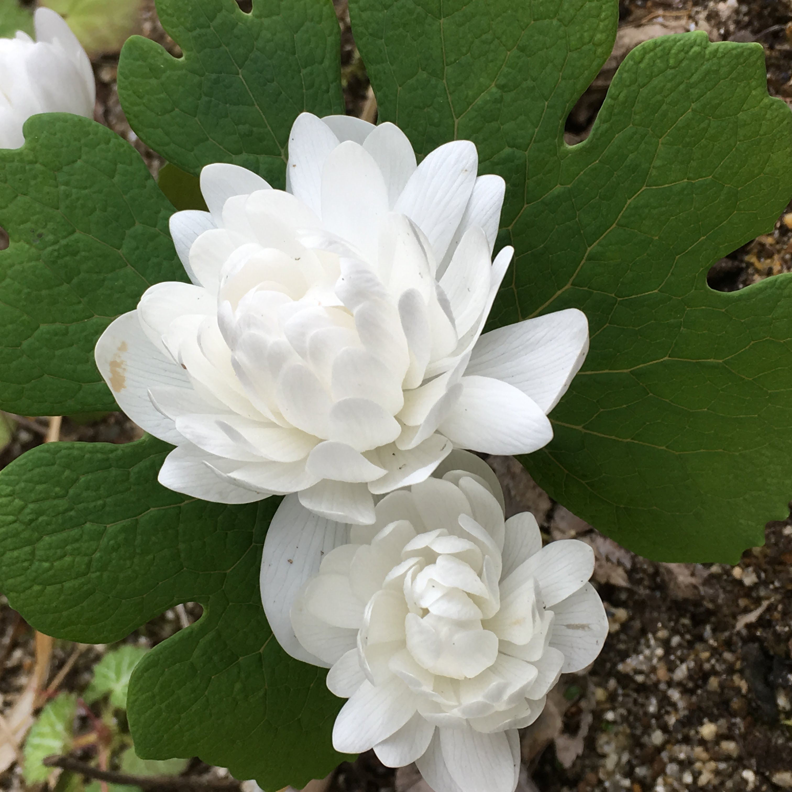
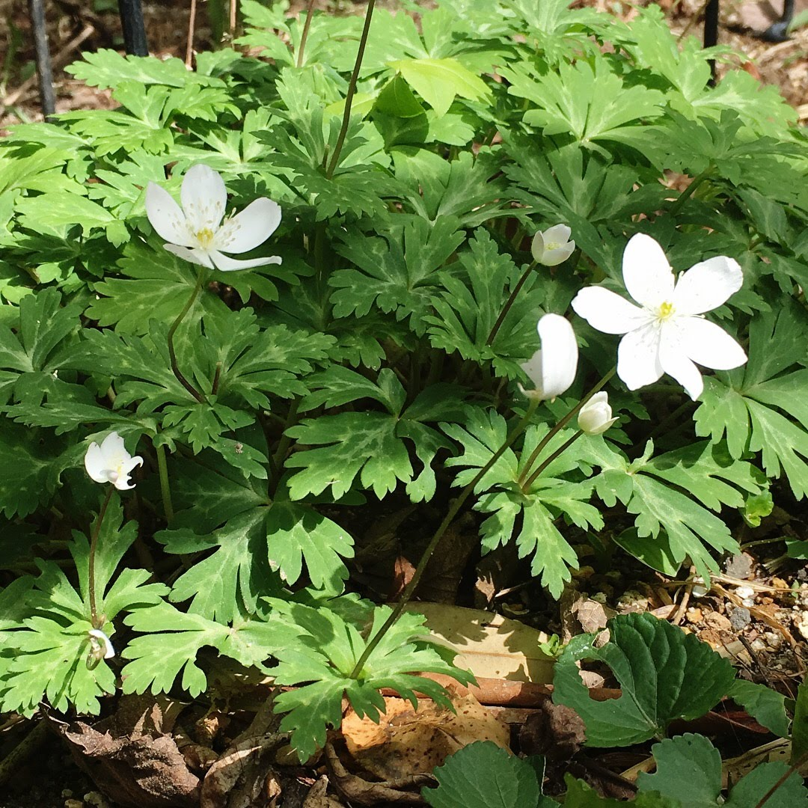

この庭の植物たち
南東北、里山の西斜面。
夏は酷暑、積雪は少なくても氷点下になる冬。
ここで逞しく根を下ろした植物たちです。
01
中〜高木
3m以上に育つ木々
落葉樹

アカシデ
赤四手 Carpinus tschonoskii
- 原産
- 日本（本州、四国、九州）
- 樹形
- 落葉高木（野生だと10〜15m）
- 剪定
- 冬剪定で芯止めして高さを抑え、数年ごとにプロの強剪定。それでも5m超。枝は大きく広がり、根も太い。
- 特徴
- 春の芽吹きは赤茶色、新緑になると小さな尻尾のような花を下げる。紅葉色は黄色〜オレンジ〜赤茶色。

ハウチワカエデ
羽団扇楓・名月楓 Acer japonicum
- 原産
- 日本と朝鮮半島の山地
- 樹形
- 落葉高木（野生だと5〜10m）
- 剪定
- 樹形が縦型で枝も少ないため、自然に任せたほうが◎
- 特徴
- 白い産毛に包まれた葉芽から薄緑の葉が一気に広がり、赤い花を下げる。秋の紅葉は黄色〜赤が混じる。
常緑樹
準備中
02
低木
2m以内に収まる木々
落葉樹
準備中
常緑樹
準備中
03
葉物
茎を立ち上げて茂る植物たち
準備中
04
グランドカバー
足元を覆い、染める植物たち
準備中
05
つる性植物
支柱や庭木に絡んで這い上がる植物たち
準備中
06
静かに添える花
そっと色を添える佇まい

チシオゲシ
血潮芥子 Sanguinaria canadensis f. multiplex 'Plena'
八重咲カナダゲシ、サングイナリアなど
- 花期
- 4〜5月
- 原産
- 北アメリカ東部
- 場所
- 日向〜半日陰
- 備考
- 草丈10cmほど。高温多湿に弱く夏は枯れて休眠するので、半日陰で乾かし気味に育てる。傷つけると赤い汁が出る（有毒）

ニリンソウ
二輪草 Anemone flaccida
- 花期
- 4〜5月
- 原産
- アジア
- 場所
- 半日陰
- 繁殖
- 地下茎で増えます
07
受け継いだ鉢物
手から手へ、受け継がれてきた命
準備中